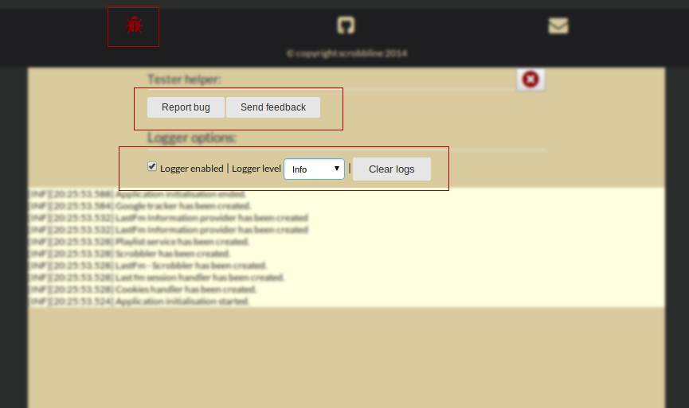

Scrobbline tutorial:
- How to start
- How to control the music playback
- How to control a playlist
- How to change a volume
- How to edit a track details
- How to sign into a last.fm portal
- How to scrobble
- How to send a feedback
How to start:
As you can read in README file, for now it supports only music from youtube.Here are few steps that you should do to fully enjoy your music using this app:
- Go to the youtube, and search for music you would like to listen to
- open the selected clip or playlist and copy the link from the address bar
-
now you can go to the scrobbline and paste your link to input box which you will find at the center of the screen (see screenshot below)

- now wait for a few seconds to load all data from the youtube and the last.fm
- to start playing the music just click on a chosen track on the playlist
Few additional information:
- music loaded from youtube has to have specific naming format/pattern - it should be an artist name and a title separated by dash
- scrobbline will load to its playlist only clips that are matching mentioned pattern
- after loading clip details from youtube, scrobbline will automatically correct the artist name and the title using last.fm database
go to menu
How to control music playback:
As you can see on the screen below there are few buttons that allow you to control the music playback. It is (from the left):- play a previous track (if currently played is first one on the playlist, it will load last track - the loop option must be selected otherwise there will be no reaction)
- Play/Pause the music
- play a next track (if currently played track is the last one on the playlist it will jump to first item - the loop option must be selected otherwise there will be no reaction

go to menu
How to control playlist:
There are buttons that allow to control the playlist and its behaviour (starting from the left):- like/love - it gives a possibility to love a track on the last.fm portal - it is required to be signed into last.fm
- loop - when is selected the playlist will be constantly repeated
- shuffle - when pressed tracks in the playlist will change order (randomly)
- save - allows to store the current playlist - using local storage
- clear - removes all tracks from the playlist (it does not clear saved playlist)

go to menu
How to change volume:
It is as easy as controlling track playback - a volume level will be changed when a volume bar will be clicked (left side is 100% right is 0% volume level).
go to menu
How to edit track details:
First step is to move the mouse pointer over the a track you want to modify details on the playlist - you will see two icons (trash and pencil) first one will remove the item from the playlist, second one will open a track details editor. There are four buttons (see screen below):- reload - it will get data from the last.fm database to validate its correction
- swap - it will swap the title and the artist name - it is not so rare, that these values are in incorrect order on youtube's track details
- save - stores entered values and refreshes the playlist view
- close - will close the editor without saving changes

go to menu
How to sign into last.fm portal:
Without signing into the last.fm portal you will not be able to scrobble music. Another benefit is that you will be able to love the music and see what you've already loved on the playlist view. To sign in you have to press a button located on the page header. You will be moved to the last.fm page where you should confirm that you are happy to allow scrobbline.com to scrobble on your profile. Do not worry it will not do anything else especially without your will. It will never ask for your password, it is not needed.go to menu
How to scrobble:
The only thing you have to do to be able to scrobble the music is to sign into the last.fm portal. It is described here: How to sign into last.fm portal. While you listening to the music scrobbline will also update information about the currently played song.go to menu
How to send a feedback
This part of application is available only during beta version for easier testing and bug reporting - will be removed in final release of the scrobbline.com.
Below you can find a screen of a testing tool. To activate it you should click a "bug" icon you can find if the footer. There are two sections - first one (starting from top) is used to send a feedback - you can report a bug or send a feature request. Just click on one of buttons and you will see a simple form to fill. Second part is used to control application logs. You can turn the logger on/off, change logging level or clear existing logs. At the bottom you will se what is going on inside the application.

go to menu